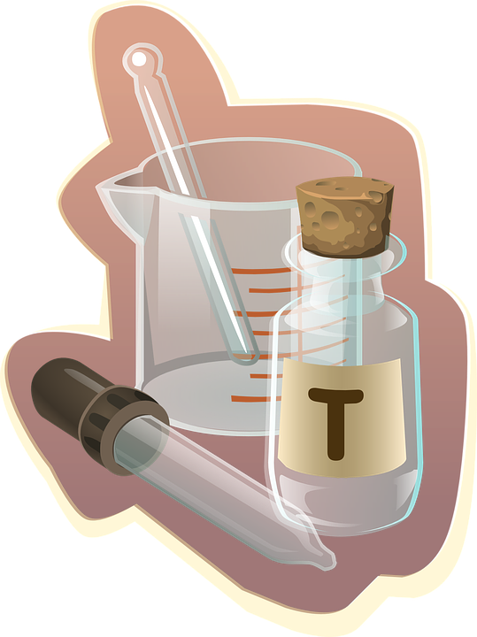

In order to be a pharmacist, you need some type of preparation in your education. One of them would be to take some pharmacy programs. If there are students that are interested in laboratory or research experience, they could continue their education to get a Ph.D. The the Ph.D. would be in completing a Master of Science degree. This would be the highest degree to get for a pharmacist job.
 Back to Home Page The Tasks Performed All About Me